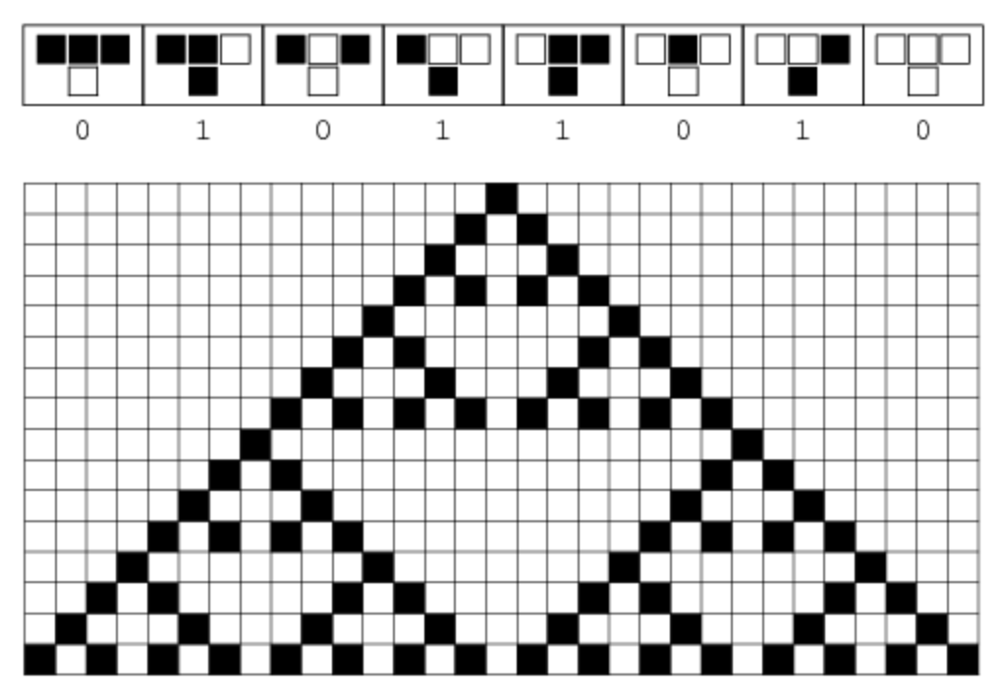

To first understand what cellular automata is, we have to understand what exactly a complex system is.
A complex system is defined as a system comprised of many components that interact with their local, surrounding neighbors based on a given subset of rules. When these smaller components interact with each other on this scale, a different behavior or pattern emerges from the system as a whole. As a result of these constant micro-interactions, complex systems can be thought as greater than the sum of its parts.
Why might this be relevant?
Complex systems exist in all walks of life and models can be created in order to mimic these complex systems found in real life. A complex system can be as small as a cell or as large as our universe. It can be as natural as the process of how snowflakes are formed or as man-made as the field of complexity economics. Researchers study these complex systems and, with the help of modern technology, model them in order to get a better understanding of how they operate in order to make better decisions on problems stemming from these complex systems.
Cellular automaton (abbrev. CA) is a type of model that can be used to describe specific complex systems. These systems consists of a regular grid of cells, each in one of a finite number of states, such as "on" and "off". This grid can be in any finite number of dimensions, but is usually either 1-d or 2-d. A set of cells, called a neighborhood, is defined relative to the specified cell. An initial state (time t = 0) is selected by assigning a state for each cell.
A new generation is created (advancing t by 1) according to some fixed rule, which defines the new state of each cell relative to its current state and that of cells in its neighborhood. These rules that govern cell states are typically the same for each cell and applied to the whole grid simultaneously.
As simple as this sounds, CA has the ability to create some very complex, unpredictable patterns.
In the case of a 1-d CA, such as the one seen in the figure above, each row can be seen as a different state in time. The very first row is the initial state of the CA system and the subsequent rows under it will each be seen as one step forward in time. Each new cell that is generated in a subsequent row will be based on the cell directly above it and the above cell's two neighbors to the left and right of it. Clicking the figure above will generate a random CA rule.
1-dimensional CA models are also called elementary cellular automaton, as it's the most basic way to depict a CA model. In an elementary CA model, the rules that dictate how new cells are formed are based on a binary structure, more on this later. Previously we talked about how each cell has a finite number of "states" and that these states are mutable as time progresses. These states can be any values, string or integer, as long as these different values affect how each cell is graphically presented in the model and possibly how they interact with their neighbors. For elementary CA models, the state of each cell or square on the board will either be "1" for on or "0", off. Black squares represent a cell being "on" or "1". Since any given cell in an elementary CA model will only have 2 neighbors, its left and right neighbor, there exists a total of 8 unique configurations for how a grouping of 3 cells can be arranged on the board: 111, 110, 101, 100, 011, 010, 001, 000. In base 10 form, these binary groupings translate to 7, 6, 5, 4, 3, 2, 1, 0, respectively. From there, a "rule" is applied which then generates how the next row in the sequence will look based on the input. These rules applied will take the input, the grouping, and return an output -- which, for elementary CA models, will either be a 0 or a 1 for the cell directly below the middle cell in the grouping. Below is the rule set for "Rule 90", which is the default rule displayed for the figure above and the one applied to the figure below the rule set. Again, the black squares denote a 1 and the white squares denote a 0. The top row of each T-block corresponds to the type of 3-cell groupings, the input of the rule set, while the bottom row of each T-block is the output for that specific grouping. Starting on the right side of the below figure, you'll see the output generated if all 3 cells in a grouping are 0's ("000").
You're probably wondering how these "rules" are formed. Well, if you convert 01011010 (the output of this rule set) in base 10, you'll get the number 90. As a result of this logic, there are a total of 256 different rule sets that are applicable to elementary CA. In other words, there are a total of 256 different ways you could arrange this 8 character long output consisting of 0's and 1's. 00000000 would correspond to Rule 0 (generates nothing, surprise!), while 11111111 would correspond to Rule 255 (the last rule possible, as 256 in binary requires one more bit). The order of how each group input is fed into which output corresponds to the positional value of the grouping. If you recall previously, each grouping can be translated into a base 10 form consisting of the numbers from 0 to 7. The 0th grouping will correlate to the right-most output and the 7th grouping will correlate to the left-most output of each rule.
Of these 256 rules, some rules develop interesting patterns only when they start off from a single cell and other rules develop patterns from randomness. The figure below generates a random initial sequence on every click along with a random rule applied to it.
What makes elementary CA so interesting is how much depth there is to something so simple. While its practical applications aren't as realized as 2-d CA models, 1-d elementary CA has become an entire field of study within CA due to the theoretical implications in math and computer science that some rules exhibit.
Rule 90 creates a fractal structure called a Sierpiński triangle. Given a much higher resolution, this triangular pattern is infinitely repeated. Other rules like Rule 110 have been proven to be Turing complete. This essentially implies that, given unlimited memory and time, any calculation or computer program can be simulated using this automaton provided that you give it the correct initial input. Beyond the theory are some practical applications. Take for instance, Rule 184 or the "Traffic Rule". Rule 184 solves what CA scientists call the "Majority Problem". The Majority Problem in CA is the problem of finding a 1-d CA rule that exhibits the behavior of "majority voting", wherein given a configuration of a two-state CA model with i + j cells total, i of which are in the "0" state and j of which are in the "1" state, a correct solution to the voting problem must eventually set all cells to "0" if i > j and must eventually set all cells to "1" if i < j. The desired eventual state is unspecified if i = j.
In the context of a model for traffic: the black cells, "1", represent cars on a one lane road while the white cells, "0", are empty spaces. The cars here are driving from left to right and the next time frame is given by each consecutive row. Cars that are densely congregated will be stuck in traffic jams for a couple generations until the jam clears up. Traffic jams are seen as clusters of black with no spaces in between them and will occur when a car is directly next to another car. The model above generates an initial row of 25% density, meaning that cars will randomly fill 25% of the empty spaces on the initial row. From this initial preset, you can see that cars generally flow along the road and traffic jams clear up pretty quickly.
The graph above will show the number of cars visible within the frame at each current generation. The count of cars are found on the y-axis while the time generation is on the x-axis. From the figure, we can see that the count of cars is trending toward 0 as time increases. This is an example of a solution to the Majority Problem as the initial traffic conditions had the majority of cell states being "0", or empty space.
In the example above, you'll see an initial traffic density of 50%. Traffic generally clears up depending on the initial, random arrangement of cars. However, as you click through, you'll see that there are also some situations wherein traffic hits a tipping point and gets backed up.
In the situation where cars account for 75% of the initial cell states at random, traffic will almost always get backed up. There are, however, rare instances where the Majority Problem will fail to pass and traffic clears up, but this isn't as frequent as a 50% initial density model.
In the figure above, you'll see how most graphs trend toward an increasing amount of cars being congested on the road. Rule 184 is an interesting rule as it implicates that from a simple ruleset, a system is able to identify the majority state based on a non-recorded count of the state of each cell's neighbor. At no point are cells given the total count of either states, and yet, it generally closes in on the majority.
2-d CA is a more practical application of CA as many more real world systems can be modeled using a 2-d landscape than 1-d. However, before we get to those applications, it's important to understand the theory and basic structure of 2-d CA.
resetIf you've heard of cellular automata in any context, you probably would have heard of the Game of Life. The Game of Life (although not technically a game, as there is no objective or user interaction) is a classic example of a 2-d CA system developed by mathematician John Horton Conway in 1970. Much like what we've seen before in 1-d CA, 2-d CA is a time dependent system. However, instead of the next time sequence being represented by each row like in a 1-d CA model, the next time sequence is just the next animation frame in the 2-d matrix of cells. The "neighbors" of each cell are also now going to be the 8 cells directly touching any cell. This configuration of potential neighbors for each cell is specific to the system being modeled, and the 8-neighbor configuration is called a Moore neighborbood. Whether a new cell is created or destroyed in the next frame is dependent on the number of neighbors surrounding a cell. There are four rules that dictate how cells are generated or destroyed:
In the case of cells that are situated on the edge of the matrix, its neighbors off-grid are, instead, going to be cells directly on its opposite edge. This endless, but finite, space is called a periodic boundary condition. The application of a periodic boundary condition is situational and dependent on the model.
The Game of Life might seem a bit hectic given its random initial condition, but given enough generations the system will reach an equilibrium and the once active cells will either form static or oscillating shapes.
The Game of Life is thought to be more of a proof of concept for the ability to model complex systems than anything else. It's an example of how simple rules can create lasting effects that ripple through a system to affect other sub-components through a sequence of local interactions. Through these many interactions, interesting shapes and patterns develop.
An example of one of these interesting patterns specific to a Game of Life based CA is the glider, which is a 5-cell shape that holds its form as it travels in one direction. From the Game of Life figure, you might have seen a glider or two if you were lucky enough for the right initial conditions. The actual glider gun configuration above was developed by Bill Gosper in 1970. This exact arrangement of cells produces a system which endlessly generates gliders that fly out diagonally.
If you were to stray from this arrangement by a couple of pixels, the result is evident in the figure below. The switch from absolute order to complete anarchy is a thin line.
However, if we were to walk this thin line, we can model some pretty interesting systems.
The management of forest fires have been getting more and more expensive every year. This increase in cost is indicative of the increase in destructive magnitude of forest fires over the decades. Data extrapolated from the The National Interagency Fire Center has stated that since 1985, the cost to fight these fires have increased 13 fold in 2018. In 1985, the cost to fight fires totaled roughly $240 million, while 2018 saw a cost of around $3.1 billion dollars.
To combat this, scientists have looked to CA as a basis for some of the more complex forest fire models that scientists use to understand how fire propagates. From these models, scientists are able to provide much more efficient preventative measures and solutions to mitigate the damage once these fires occur.
Clicking on the figure will start the fire model, and after all the fires have gone out, clicking on the figure again will restart the model. While rudimentary compared to the level of models that scientists use, the figure above gives us a general idea of how these forest fires spread. The model above features a 2-d CA framework that utilizes 4 different possible states for each cell in the matrix.
Once started, any trees in direct contact with a fire has a 12.5% chance of catching on fire per fire surrounding it. And so, any additional fires surrounding a tree will boost this probability of ignition by another 12.5%. From these probabilities, A tree surrounded by 8 fires thus have a 100% chance of igniting, and at least two fire cells will propagate after the first jump in time. In addition to this, any active cell will turn into charcoal after 2 generations. These charcoal cells cannot be burned again and will remain burnt until the animation is restarted.
This figure above has the same logic as the forest fire model, but the charcoal cells now have the color of their fill dependent on time generations, with dark blue being the last wave of tree cells burnt.
Another interesting application of a 2-d CA based logic lies in the modeling of urban sprawl. More specifically, the the process of rural-to-urban growth. In this model, two states are present: a walker state in grey and an aggregate state in red. These walkers are used to simulate the movement of people across a geography and have an equal chance of walking in any four directions around them: up, down, left or right. When these walkers neighbor an aggregate they transition state and become stuck to the aggregate. This transition from walker to aggregate represents the act of a person settling down permanently at a location and assimilating into urban society.
resetGiven enough time generations, tree-like structures begin to form from walkers randomly running into these aggregates. Scientists study the formation of these tree-like structures called Brownian trees.
Brownian trees are the perfect example of the results found when a complex system successfully thrives on the edge of chaos. The creation of these trees are rooted in both chaos and order. Random walkers provide the entropy to a system that is balanced by the order of rules required to form an aggregate.
The presence of these Brownian trees are also found in complex systems found in nature, such as the aggregation of oil embedded into sand by way of water pressure, formation of catalysts, and snowflakes.
resetAbove is a sped up version with invisible random walkers.
Cellular Automata systems exist everywhere in life and when we recognize these systems around us, we can begin to conceptualize their inner workings. Through this understanding, we can then construct models in order to look for patterns in the system. With this knowledge, we're able to predict insightful data to formulate more sound, efficient solutions to some of the problems we face.